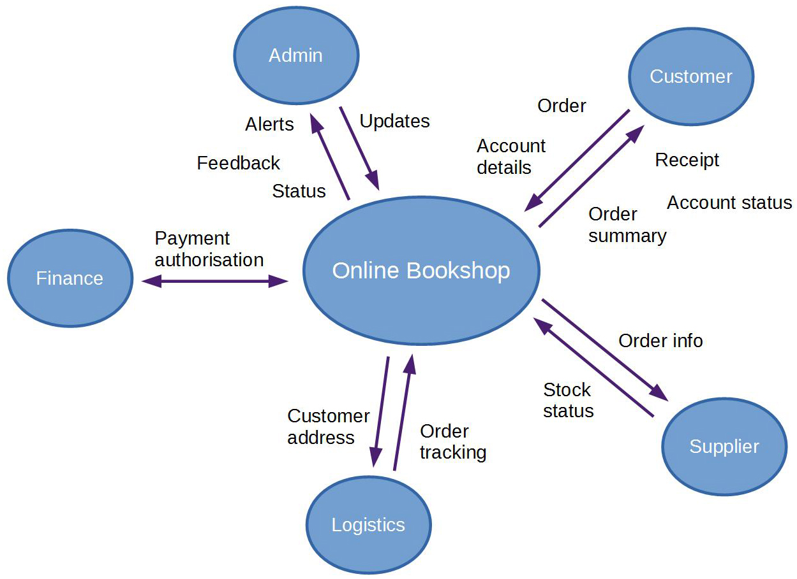
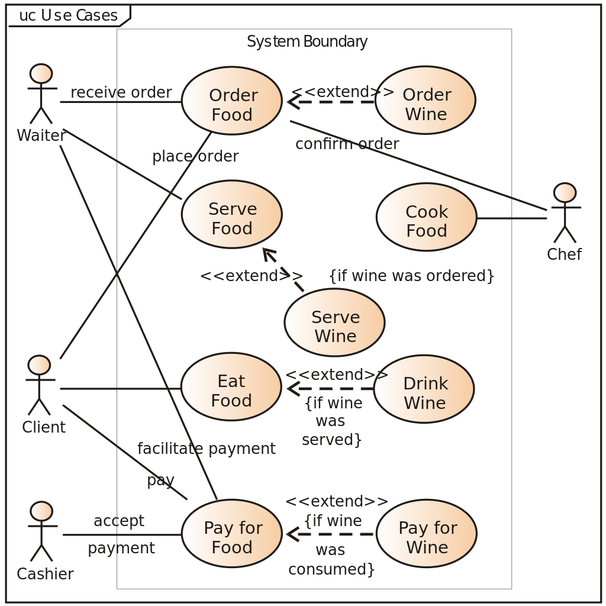

class: center, middle, main-title # Software Design and Architecture Part 1 --- ## Today - Content - Basic understanding about modelling and design - System context diagram - Use case diagram - Questions, ideas, comments - [Sli.do #VUSE1905](https://app.sli.do/event/jhmdu4zl) --- ## The basic problem: how? <br> .center[Requirements] .center[↓] .center[????] .center[↓] .center[Code] --- ## It depends - Small and simple problems - Solved with little attention to design -- - Big and difficult problems - Design largely determines how complex software can become --- ## Why is that? - Code is only limited by what people can imagine -- - However, [human mind is very limited](https://javadevguy.wordpress.com/2017/11/02/transcending-the-limitations-of-the-human-mind/) ??? How big a codebase can one developer know deeply. 100k LoC? --- ## Models to the rescue > A model **represents some aspect of reality** or an idea that is of interest. > A model is a **simplification**. > It is an interpretation of reality that **abstracts** the aspects > relevant to solving the problem at hand and **ignores extraneous detail**. > <br><br>— <cite>Eric Evans, [Domain-Driven Design](https://www.goodreads.com/book/show/179133.Domain_Driven_Design), 2003</cite> --- ## Model of average life expectancy  --- ## More on models - A model is merely a human construct to help us better understand the real world -- - We can model what was, what is, and **what could be** ??? - Models Software design is mostly about choosing a good model for the software --- ## Design > 1. [**process**] to define the architecture, system elements, interfaces, and other characteristics of a system or system element. > 2. **Result** of the process in (1). > <br><br>— <cite>Systems and software engineering - Vocabulary, ISO 24765:2017</cite> --- ## More on design - Design is about defining (modelling) a system or system element in order to: - achieve the goals - satisfy constraints - ensure other desired qualities -- - Design can be done at different levels - With different goals -- - There are always multiple alternative viable designs -- - The goal is to choose the best one - Analogy with planning - selecting the best possible future --- ## What does design help with? - Mitigating risks -- - Communicating, discussing, and validating ideas -- - Decomposing and delegating work -- - Construction --- ## Another term: Architecture > A software architecture is a **description** of the **subsystems** and **components** > of a software system and the **relationships** between them. > <br>[…]<br> > The software architecture of a system is an artifact that results from the software **design** activities. > <br><br> — <cite>[Pattern-Oriented Software Architecture](https://www.goodreads.com/book/show/85039.Pattern_Oriented_Software_Architecture_Volume_1), 1996</cite> -- Essentially a set of **components** and **connectors** at a software system level; a blueprint for a software system. --- ## How to communicate design? - In a free form - Diagrams and drawings - Text - Tables -- - Using standard notation - [Unified Modelling Language (UML)](https://en.wikipedia.org/wiki/Unified_Modeling_Language) - [The C4 model](https://c4model.com/) --- ## So where to start? Always start with the problem. > **Without requirements** that your solution must fulfill, all **design** work […] **is just guessing** at best. > <br><br> — <cite>Frank Buschmann, [SE Radio podcast E54](https://www.se-radio.net/2007/04/episode-54-interview-frank-buschmann/)</cite> -- So let's look at the software system as a whole. --- ## System context diagram  --- ## Use case diagram  --- ## Some attributes of these diagrams | System context | Use case | | ---------------| -------- | | Big picture of the system landscape | Actor interactions with the system | | Free-form or C4 model | UML standard | | System as a single element | System as a boundary with use cases within | | Works well for documenting existing systems | Works well for visualizing requirements | --- ## Key takeaways - What are models -- - What is design (both as an activity and as a thing) and why do we need it -- - Ways of documenting software systems at the highest level --- ## Reading assignment Mandatory: - [Blog post: Transcending limitations of the human mind](https://javadevguy.wordpress.com/2017/11/02/transcending-the-limitations-of-the-human-mind/) Recommended: - [Talk: Pragmatic architecture](https://www.youtube.com/watch?v=jNgZtM6SQmE) --- class: middle, center # Questions? --- ## Next time - More about design - How to identify and communicate main elements of a software system - How do we tell a good design from a bad one? - What design principles should we follow? - Etc.